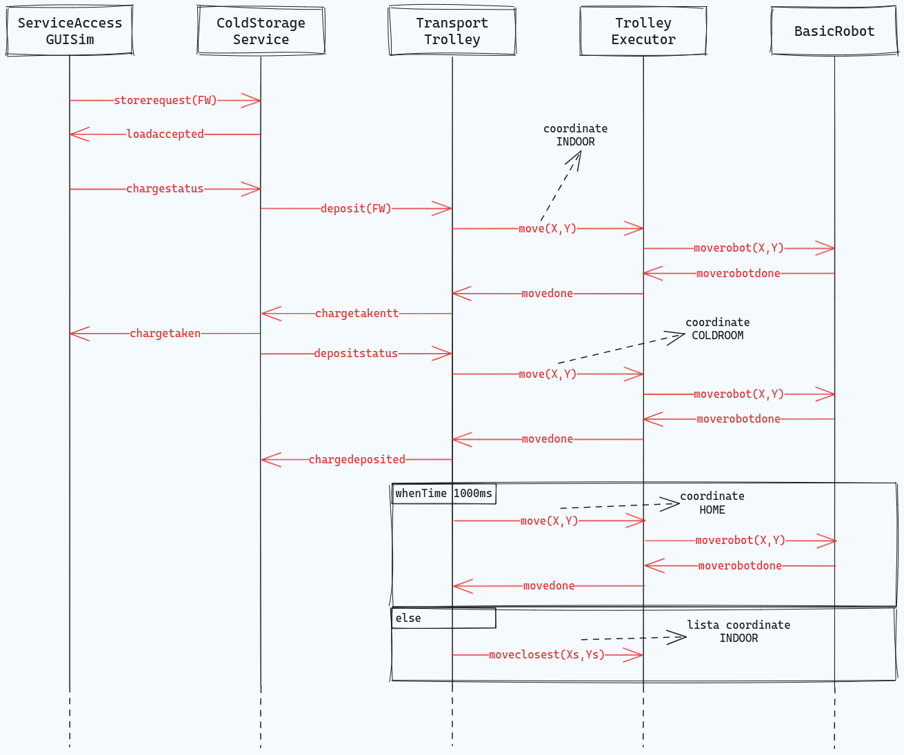
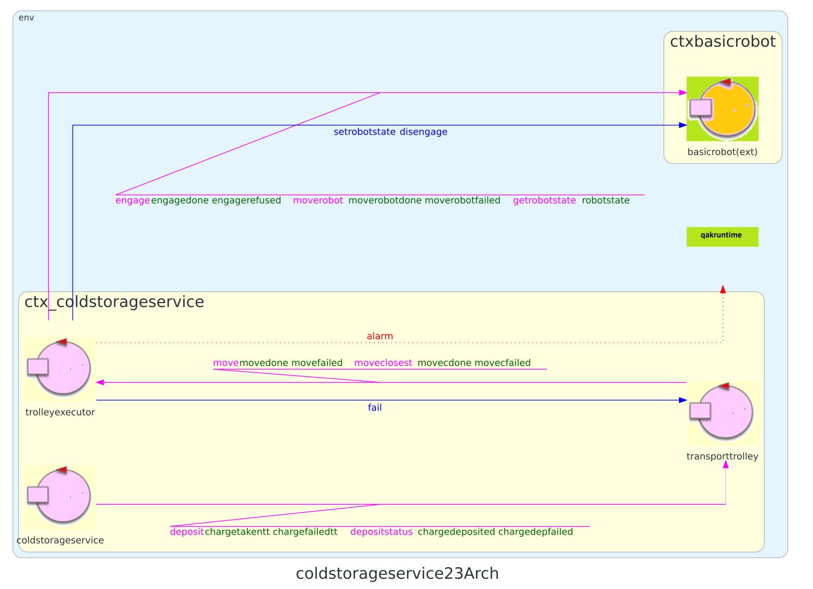
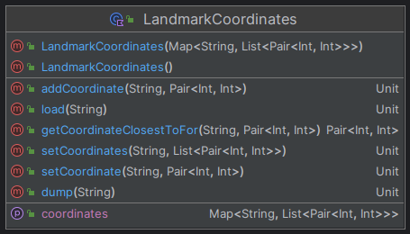

Introduction
All'interno di questo Sprint verrà analizzato il core-business dell'applicazione, esplicitato nello Sprint0 come l'interazione tra ColdStorageService (CSS) e TransportTrolley (TT).
Requirements
Descrizione requirements a questa pagina
- Definire con precisione i componenti dell'applicazione, limitandosi al contesto di CSS e TT
- Formulare il modello di interazione tra ColdStorageService e TransportTrolley
L'interazione tra TT e basicRobot è implicita per il funzionamento del core-business e verrà trattata nel corso del documento.
Requirement analysis
Dal documento dei requisiti, relativamente a questo Sprint, consideriamo i seguenti argomenti da trattare:
- Service area
- basicRobot e TransportTrolley
- Interazione tra CSS e TT
Entità
Sono riportate le quattro entità che partecipano alla realizzazione del core-business dell'applicazione.
| Entità | Comportamento |
|---|---|
| serviceaccessguisim | Entità adibita al testing che permette l'invio di una richiesta a coldstorageservice per dare inizio alla fase di deposito |
| coldstorageservice | Gestisce le richieste di deposito e comanda il transport trolley con istruzioni di alto livello, mantiene la rappresentazione della service area |
| transporttrolley | Gestisce le richieste del ColdStorageService inviando comandi di basso livello al basicRobot |
| basicrobot | Entità che riceve istruzioni di "medio livello" e le traduce in istruzioni di basso livello per guidare il DDR robot o un virtual robot. |
Dati
Di seguito, sono elencati tutti i dati presenti nei requisiti, con annessa una breve descrizione.
| Dato | Tipologia | Descrizione |
|---|---|---|
| MAXW | Costante, float | Limite massimo di chilogrammi che la ColdRoom può contenere in un dato momento. |
| RD | Costante, intera | Lunghezza del lato del transport trolley. |
| FW | Variabile, float | Quantità di carico che un camion refrigerato deve depositare, espressa in chilogrammi. |
| TTState | Enumerativo | Tre valori che rappresentano i possibili stati in cui si puà trovare il transport trolley (in HOME, in movimento e fermo): HOME, MOVING, STOPPED |
| currentTTState | Variabile, enumerativo | Stato attuale del transport trolley, di tipo TTState |
Messaggi
Sono riportati i messaggi che realizzano le interazioni tra le varie entità (esclusi quelli tra TT e basicRobot, che verranno analizzati in seguito).
| Mittente | Destinatario | Tipologia messaggio | Formato | Significato |
|---|---|---|---|---|
| serviceaccessguisim | coldstorageservice | Request | storerequest(FW) | Richiesta di storage di FW chili di cibo. |
| coldstorageservice | serviceaccessguisim | Reply | loadaccepted() | La richiesta di deposito è stata accettata. |
| coldstorageservice | serviceaccessguisim | Reply | loadrejected() | La richiesta è stata rifiutata. |
| serviceaccessguisim | coldstorageservice | Request | chargestatus() | Viene richiesto lo stato del carico depositato. |
| coldstorageservice | serviceaccessguisim | Reply | chargetaken() | Il deposito è stato preso in carico dal transport trolley, il camion deve spostarsi da INDOOR. |
| coldstorageservice | serviceaccessguisim | Reply | chargefailed() | Ci sono stati problemi durante la presa in carico del deposito. |
| coldstorageservice | transporttrolley | Request | deposit() | Il CSS comunica al transport trolley che è presente un nuovo carico da depositare. |
| transporttrolley | coldstorageservice | Reply | chargetakentt() | Il carico è stato prelevato dal transport trolley. |
| transporttrolley | coldstorageservice | Reply | chargefailedtt() | Ci sono stati problemi durante la presa in carico da parte del transport trolley. |
| coldstorageservice | transporttrolley | Request | depositstatus() | Viene richiesto al transport trolley lo stato del cibo che ha preso in carico. |
| transporttrolley | coldstorageservice | Reply | chargedeposited() | Il carico è stato depositato nella ColdRoom. |
| transporttrolley | coldstorageservice | Reply | chargedepfailed() | Ci sono stati problemi durante il deposito del carico nella ColdRoom. |
Ogni risposta è presente nella sua accezione di successo e di fallimento. Si discrimina quindi in base al messaggio e non all'argomento, in modo da gestire con maggiore flessibilità il passaggio tra i vari stati degli attori Qak.
Vediamo essere presente una semantica request-reply che comprende tutte le interazioni dalla ServiceAccessGUISim al TransportTrolley, passando per il ColdStorageService.
In questo modello, gli unici messaggi che vengono inviati dalla ServiceAccessGUISim corrispondono alla richiesta di deposito (storerequest(FW)) e alla richiesta dello stato del carico (chargestatus()). Questa decisione si basa sul fatto che in questo Sprint non verrrà trattata la questione dei ticket (fuori dalla core-business logic); perciò avremo che, a seguito di un'eventuale accettazione della richiesta di deposito (storeaccepted()), si passerà direttamente alla logica applicativa che la implementa.
KEY-POINT: semantica request-reply per le interazioni della core-business.
Componenti
ServiceAccessGUISim
Come detto, in questo Sprint concentreremo l'attenzione sui componenti che implementano la core business logic del sistema e, nonostante non ne faccia direttamente parte, avremo necessità di definire la ServiceAccessGUI per testare il funzionamento della logica applicativa. Ecco perchè, come anticipato nello Sprint0, verrà modellata come un simulatore che invia una storerequest al ColdStorageService.
Lo studio approfondito di questo componente sarà considerato negli sprint successivi, mentre all'interno di questo documento è presente l'analisi e conseguente realizzazione della versione "simulata" necessaria in questa fase del progetto.
In questo sprint la ServiceAccessGUISim (SAGSim) non gestirà l'inserimento del ticket e la differenziazione tra gli utenti che interagiscono, in quanto queste funzionalità verranno analizzate nel prossimo sprint.
Tuttavia, verrà implementata una versione del ColdStorageService in grado di gestire richieste di deposito concorrenti, per i casi in cui avremo più istanze di SAGSim che effettuano richieste di deposito.
TransportTrolley e DDR Robot
Il TT è una entità astratta che aggiunge funzionalità di più alto livello ad un DDR robot (come riportato dai requisiti). Queste funzionalità sono:
- trasportare un carico di cibo da INDOOR a ColdRoom;
- recarsi in HOME quando non sono presenti richieste;
- comunicare il proprio stato a entità interessate.
- comunicare all'utente Camion refrigerato che è stato prelevato il carico
Queste funzionalità condividono un requisito fondamentale: la possibilità di navigare la service area. Sarà quindi necessario crearne una rappresentazione comprensibile al componente che controllerà il robot concreto. Nei successivi paragrafi verrà affrontato questo aspetto.
In questa fase dello sviluppo il DDR Robot sarà rappresentato da un robot virtuale, disponibile alla nostra software house, che offre una visualizzazione di un robot virtuale che naviga una service area (anch'essa virtuale) e gestisce gli stessi comandi di "medio livello" che il DDR Robot è in grado di gestire.
ColdStorageService
È stata discussa con il committente la questione dell'allontanamento del camion refrigerato dalla INDOOR: il messaggio chargetaken conferma il completamento del ritiro del carico da parte del transport trolley, in tal momento il camion deve allontanarsi immediatamente. In caso di richiesta rifiutata il camion si deve allontanare alla ricezione del messaggio storerejected.
Dall'ultimo incontro con il committente è emerso che il DDR Robot impiega un tempo predefinito per prelevare un carico dal camion.
Service area
Dall'analisi dei requisiti dello sprint precedente abbiamo modellato la service area come un rettangolo contenente aree di interesse:
- HOME: quadrato di lato RD che identifica la posizione di partenza del transport trolley, è collocato sopra alla zona evidenziata;
- ColdRoom: area di dimensione non non ancora definita, rappresenta la ColdRoom dove il transport trolley deve depositrare i carichi;
- INDOOR: posizione lungo la parete inferiore adiacente alla parete sinistra, il transport trolley deve recarsi in quest'area per prelevare i carichi da i camion;
- PORT: posizione lungo il bordo inferiore dell'area della ColdRoom, il transport trolley deve posizionarsi in questa area per scaricare i carichi nella ColdRoom
Abbiamo dato delle specifiche in metri, in modo da avere una definizione precisa e formale.
Nella successiva fase di analisi, astrarremo dalla specifica unità di misura in metri per adattarla all'entità robot con cui lavoriamo.
Problem analysis
Componenti
ColdStorageService
Il CSS si occupa solo di:
- accettare/rifiutare la richiesta di deposito
- notificare il TransportTrolley della presenza di un nuovo carico
- notificare la ServiceAccessGUISim della presa in carico da parte del TT (messaggio chargetaken)
KEY-POINT: il ColdStorageService è indipendente dall'area di servizio e dalle logiche di movimento del trolley.
Uno dei principali problemi riguarda appunto la rappresentazione dell'area di servizio, che influisce sull'interazione con il robot e su come esso si muove all'interno della stanza.
Service area
Partendo dalla misurazione in metri vista nello Sprint0, introduciamo il concetto di unità robot. La nostra nuova unità di misura si basa sulla dimensione del lato del TransportTrolley, ovvero RD.
Questo ci ha permesso di suddividere la service area in una griglia di quadrati di lato RD, in modo tale che ogni posizione sulla griglia possa contenere il DDR robot.
KEY-POINT: servicearea rappresentata come griglia di quadrati di lato RD, ovvero l'unità robot.
La rappresentazione della service area diventa quindi come nella figura sottostante: si noti il sistema di assi cartesiani che pone il punto (0, 0) in corrispondenza della posizione HOME, che corrisponde alla posizione di partenza.
I punti di interesse INDOOR e PORT finora sono stati modellati come posizioni monodimensionali, in quanto si tratta di "aperture" al quale il robot può accedere: in questo modello verranno indicati come "la posizione in cui il robot deve trovarsi per potervi accedere".
Dal punto di vista del transport trolley la service area sarà rappresentata da una griglia NxM.
La dimensione di ColdRoom, Port e Indoor è stata adatta per farla combaciare alle dimensioni della griglia. Infatti, muovendosi il robot "cella per cella", sarebbe inutile avere celle piene a metà in quanto il TransportTrolley non potrebbe ugualmente accedervi.
Per generare una mappa della service area abbiamo sfruttato il software unibo.mapperQak23 che si avvale di basicrobot per ottenere le dimensioni dell'area e individuare eventuali ostacoli lungo i bordi, generando una rappresentazione della service area.
La rappresentazione generata verrà utilizzata come mappa di default dall'applicazione mapConfigurator (illustrata successivamente) per personalizzare la service area.
Si noti la dimensione della ColdRoom in precedenza, più piccola di quella attuale.
TransportTrolley e DDR Robot
Il DDR Robot è il punto finale della catena di core-business, l'entità che esegue le azioni di deposito. Possiamo quindi pensarlo come il vero "robot", che potrebbe essere reale o virtuale.
D'altra parte, il Transport Trolley è un concetto più astratto, che racchiude la logica e controlla il DDR.
All'interno del ColdStorageService opererà quindi l'entità TransportTrolley, occupandosi di tutte le funzionalità descritte in fase di analisi dei requisiti. Questa entità astratta dovrà comunicare con il "vero" robot per implementare il movimento e le azioni da compiere.
Al fine di astrarre le indicazioni del TransportTrolley al robot esecutore e permettere di intercambiare supporto (DDR robot o VirtualRobot) si fa uso del software BasicRobot, fornito dal committente; il software espone l'attore qak basicrobot con il quale è possibile comunicare per indicare al robot dove spostarsi, indicando le coordinate della destinazione da raggiungere.
TrolleyExecutor
L'analisi del problema del ritorno del robot alla posizione HOME dopo aver depositato un carico ci ha spinto a introdurre un nuovo componente, il TrolleyExecutor, per distaccare il TransportTrolley dal funzionamento di BasicRobot al fine di realizzare comportamenti di più alto livello da mettere a disposizione al TransportTrolley.
In particolare abbiamo considerato necessario introdurre un comando per permettere al transport trolley di indicare uno spostamento verso la posizione più vicina data una lista di posizioni (le loro coordinate); questa funzionalità, attuabile tramite la richiesta moveclosest(Xs,Ys), è stata implementata perché alcune posizioni notevoli della service area sono aree costituite da più di una coordinata.
KEY-POINT: Questa funzionalità permette di ottimizzare la distanza che il robot deve percorrere in certe istanze, riducendo il tempo di esecuzione di alcuni specifici spostamenti.
Basic robot
L'attore Qak basicRobot, contestualmente al core-business di questo Sprint, è incaricato di realizzare il movimento tra i vari landmarks della Service Area.
Tra le entità da noi definite, il TrolleyExecutor è l'unico a comunicare con il suddetto attore e necessiterà dei seguenti messaggi per attuare gli spostamenti:
- engage(OWNER, STEPTIME): in fase di inizializzazione, specificando al basicrobot chi lo sta usando (per ottenere l'accesso esclusivo) e qual è lo STEPTIME
- setpos(X,Y,D): al successo dell'engage il transporttrolley invia questo messaggio al basicrobot per comunicare la posizione e direzione attuali del virtualrobot: il basicrobot manterrà internamento lo stato del robot basandosi su questa inizializzazione
- moverobot(TARGETX, TARGETY): per realizzare il movimento all'interno della Service Area.
- alarm(): per interrompere il movimento del basicrobot.
- getrobotstate(): per ottenere la posizione corrente del robot
Nella nostra astrazione tra TransportTrolley, TrolleyExecutor e basicRobot manteniamo la semantica request-reply per gli spostamenti, in quanto è necessario essere a conoscenza del successo o fallimento del movimento.
Essendo che il basicRobot necessità di coordinate per muoversi, il TransportTrolley deve conoscerle obbligatoriamente. In particolare, deve avere a disposizione il mapping landmarks-coordinate, in modo da poter comunicare al TrolleyExecutor lo spostamento che dovrà implementare.
Responsabilità dei singoli componenti
Viene riportata di seguito una tabella con tutte le funzionalità svolte da già ciascun componente. Per ognuno di essi, viene rispettato il principio di singola responsabilità.
| Entità | Responsabilità |
|---|---|
| serviceaccessguisim | Entità adibita al testing che permette l'invio di una richiesta a coldstorageservice per dare inizio alla fase di deposito |
| coldstorageservice | Gestisce le richieste di deposito (accettazione/rifiuto) e notifica il transporttrolley della presenza di un nuovo carico |
| transporttrolley | Definisce il movimento che deve compiere il robot e gestisce la sua coda di richieste |
| trolleyexecutor | Implementa lo spostamento comunicando con il basicrobot basandosi sulle coordinate fornite dal transporttrolley |
| basicrobot | Entità che riceve istruzioni di "medio livello" e le traduce in istruzioni di basso livello per guidare il DDR robot o un virtual robot. |
Interazioni
Riguardo alle interazioni viste in fase di analisi dei requisiti, vengono aggiunte le interazioni presenti tra TrolleyExecutor e basicRobot per realizzare il movimento vero e proprio (descritte nella sezione Basic robot subito sopra).
Diagrammi di sequenza
Le frecce sono colorate in base al tipo di messaggio:
- request/reply
- dispatch
- event
Si riporta lo schema di funzionamento del core-business, supponendo che il carico venga accettato (in caso contrario il flusso si ferma).
Sono presenti anche i messaggi per i 3 movimenti che dovrà compiare il robot:
- raggiungere la INDOOR
- raggiungere la PORT
- ritornare in posizione HOME
Viene esplicitata chiaramente la semantica request-reply usata nell'intero ciclo di interazioni.

Nell'immagine viene dettagliata la specifica interazione tra TrolleyExecutor e BasicRobot, in particolare la semantica del funzionamento della richiesta moveclosest.
In alto, è presente anche il protocollo di inizializzazione tra le due entità che implementano il movimento.
Test plans
Essendo che è già stata presentata nello Sprint0 una unità di test JUnit che verifica il funzionamento della stessa logica di interazione presente in questo Sprint, abbiamo deciso di non realizzare nessun altro piano di test ulteriore.
L'interazione CSS-TT non è rispetta ancora completamente i requisiti, in quanto manca la gestione del ticket, abbiamo quindi deciso di delegare la realizzazione di una unità di test comprensiva al prossimo Sprint, ove anche questo aspetto sarà trattato.
Project
ColdStorageService
Si riporta di seguito l'architettura logica del ColdStorageService.
Gli attori coldstorageservice, transporttrolley e trolleyexecutor risiedono nello stesso contesto in questo sprint, nel prossimo sviluppo verrano aggiunti componenti che determineranno un nuova distribuzione in contesti.
Attore coldstorageservice
L'attore coldstorageservice è incaricato di comunicare con la ServiceAccessGUISim: gestisce la richiesta di deposito accettandola se la ColdRoom può contenere il carico richiesto, rifiutandola altrimenti. A questo scopo si utilizzano le variabili e constanti:
val maxColdRoom: Float: mantiene il peso massimo che la ColdRoom può contenerevar currentColdRoom: Float: memorizza il peso corrente contenuto nella ColdRoom
Questo attore è incaricato di valutare l'accettazione della richiesta: nel caso in cui venga accettata risponde alla ServiceAccessGUISim con la risposta loadaccepted, successivamente attende una richiesta chargestatus da parte della ServiceAccessGUISim.
La richiesta chargestatus è stata introdotta come comunicazione da parte della SAG che il camion è arrivato a INDOOR e il TransportTrolley può prelevare il carico; nel prossimo sprint questa interazione verrà rifinita dalla richiesta di inserimento del ticket.
La richiesta deposit(FW), inviata dal CSS al TransportTrolley, denota la partenza del robot da HOME (o altra posizione se era in gestione un altro carico) verso INDOOR. Una volta prelevato il carico il CSS riceve risposta chargetakentt, successivamente il CSS comunica alla SAG che il camion deve spostarsi da INDOOR tramite la risposta chargetaken.
Attore transporttrolley
Il transporttrolley è incaricato di comunicare al trolleyexecutor dove dovrà spostare il robot.
Quando riceve un messaggio deposit l'attore comunica al trolleyexecutor di spostarsi a INDOOR tramite il messaggio move(x, y) (possibile in quanto il TT ha il mapping landmark-coordinate); successivamente comunica a coldstorageservice che il carico è stato prelevato con il messaggio chargetakentt per poi indicare al trolleyexecutor di implementare lo spostamento fino alla ColdRoom, comunicando infine l'avvenuto deposito con il messaggio chargedeposited.
Durante uno qualsiasi degli stati che l'attore assume durante lo spostamento, esso è in grado di ricevere una richiesta deposit che verrà gestita al termine del ciclo corrente. Se a questo avvenimento nessuna richiesta deposit è presente, l'attore attende 1 secondo prima di comunicare al trolleyexecutor di tornare in HOME per poter gestire eventuali nuove richieste di deposito.
Durante il ritorno in HOME, transporttrolley è in grado di ricevere nuove richieste di deposito: in tal caso richiede al trolleyexecutor una azione moveclosest(Xs,Ys).
Gli stati nei quali si attende una risposta dal trolleyexecutor implementano un timeout tramite la transizione whenTime per gestire eventuali malfunzionamenti dei supporti sottostanti: in caso di timeout viene comunicato di riavviare l'applicazione, evitando così attese infinite.
Attore trolleyexecutor
L'attore trolleyexecutor si occupa della comunicazione con l'attore basicrobot, implementando solamente degli spostamenti dalla posizione attuale alle coordinate (x,y) fornite da transporttrolley.
All'inizializzazione viene ingaggiato il basicrobot tramite engage, usando poi setrobotstate per impostare posizione iniziale a (0,0) e direzione d.
Il compito principale del trolleyexecutor è quello di attuare il comando moveclosest, a questo scopo viene mantenuta una variabile boolean var isMoving = false che assume valore true quando il robot è in movimento e viceversa.
Questa variabile serve all'attore per discriminare due casi diversi alla ricezione di moveclosest:
- se
isMoving == trueviene inviato un eventoalarmper fermare il robot, viene poi richiesta la posizone attuale del robot con la richiestagetrobotstate - se
isMoving == falseviene direttamente richiesta la posizione
moverobot(X,Y).
Il messaggio moveclosest contiene due parametri:
- il primo una lista di valori interi che rappresentano le X delle coordinate
- il secondo una lista di valori interi che rappresentano le Y delle coordinate
,, ( o ) e non possono iniziare con un valore numerico, è stata quindi creata una rappresentazione adhoc (arbitraria) per comunicare le coordinate.In particolare le stringhe iniziano con il carattere
s seguito da valori numerici interi, separati dal carattere l.
Coordinate
L'attore transporttrolley deve conoscere le coordinate dei landmark (PORT, INDOOR, HOME) per guidare il basicrobot.
A questo scopo è stata creata una apposita classe, unibo.landmarks.LandmarkCoordinates che mette a disposizione metodi per caricare e gestire la configurazione dei landmark generata dal MapConfigurator.
Si riporta di seguito il diagramma UML della classe LandmarkCoordinates.

getCoordinateClosestToFor(String, Pair<Int, Int>) che permette di ottenere la coordinata più vicina a una coordinata specificata per un certo landmark, specificato da una stringa che ne indica il nome. Questo permette a transporttrolley di comunicare a trolleyexecutor di spostarsi sempre alla coordinata più vicina per il landmark di destinazione, essendo alcuni landmark costituiti da più punti diversi.
Deployment
Distribuzione
Per il deployment di queste applicazioni si è deciso di utilizzare Docker,in modo da poter uniformare la metodologia di gestione della distribuzione dei vari componenti del servizio.
In particolare abbiamo creato dei Dockerfile, utilizzando l'apposito linguaggio dichiarativo, usati poi per creare le immagini che faranno parte dei container che eseguono i servizi.
Si riporta di seguito il Dockerfile usato per generare l'immagine di mapConfigurator.
FROM openjdk:11
EXPOSE 8015
VOLUME ["/data"]
ADD ./build/distributions/unibo.mapConfigurator-boot-2.2.tar /
WORKDIR unibo.mapConfigurator-boot-2.2/bin
CMD ["bash", "./unibo.mapConfigurator"]Allo scopo di velocizzare la creazione dei Dockerfile e delle rispettive immagini abbiamo implementato una serie di task Gradle che automatizzano questo compito, è possibile visualizzare queste task in un qualsiasi file build.gradle.kts (esempio).
Tutte le immagini docker relative a questo progetto saranno rese disponibili online a questo profilo Docker Hub.
Contestualmente al prossimo sprint verranno realizzate le apposite task Gradle per generare le immagini Docker per tutti i servizi coinvolti, così come la configurazione di un volume docker sfruttato dai container per file condivisi.
Controllo
Dati i vari servizi da gestire verrà progettata e messa a disposizione del cliente una applicazione dedicata alla gestione dei componenti del servizio, permettendo di manipolare impostazioni e valori di default delle applicazioni tramite un'interfaccia grafica.
Protocollo di avvio
Ad ora, in attesa della dockerizzazione di tutti i progetti e della creazione della suddetta applicazione, abbiamo definito il seguente protocollo di avvio dei vari servizi:
- VirtualRobot e basicRobot tramite compose delle immagine Docker
cd ./projects/unibo.basicrobot23 docker compose -f basicrobot23.yaml up -
ColdStorageService (progetto Qak)
cd ./projects/sprint1v0 gradlew run -
ServiceAccessGUISim (progetto Spring)
cd ./projects/unibo.serviceaccessGUISim gradlew bootRun
Maintenance
Riccardo Barbieri - riccardo.barbieri11@studio.unibo.it

Leonardo Ruberto - leonardo.ruberto@studio.unibo.it

GIT repo: https://github.com/RiccardoBarbieri/ColdStorageService